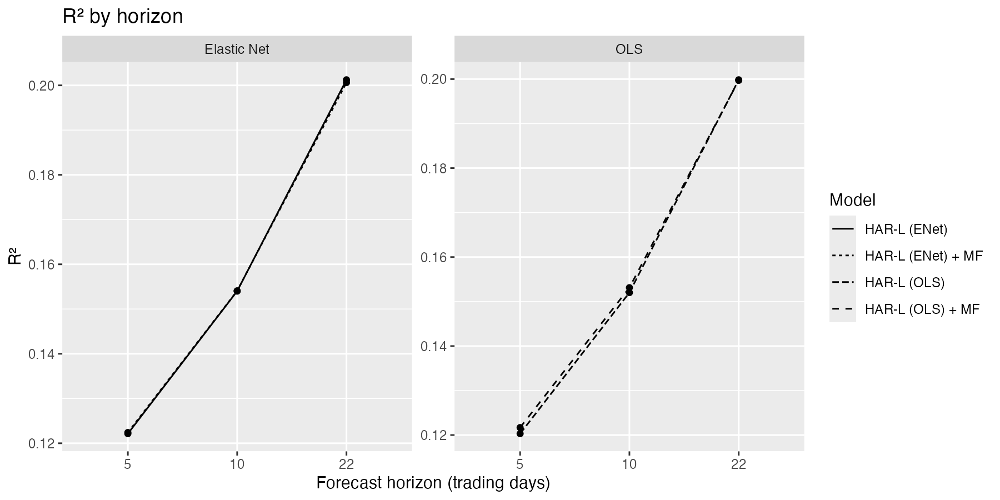
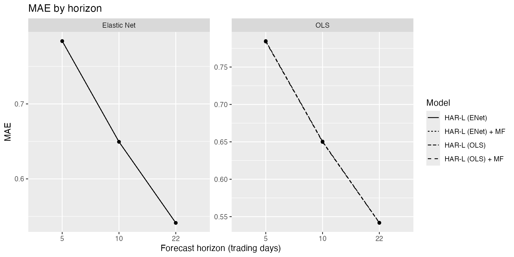
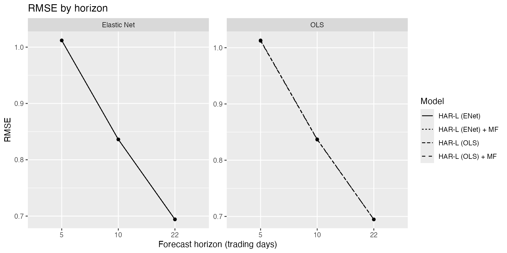
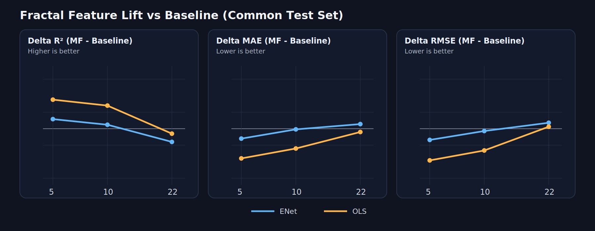

Fractal Vol Forecast
Multifractal features for cross-sectional volatility forecasting on S&P 500 names.
94,732Common-test rows at 5-day horizon
5 / 10 / 22Forecast horizons (trading days)
0.201Best out-of-sample R² (22d, ENet baseline)
+0.00026Best MF R² lift (5d, ENet + MF vs ENet)
Problem
Estimate forward log realized volatility across the S&P 500 and test whether multifractal signals improve on a strong HAR-L baseline, especially at shorter horizons where market microstructure effects are stronger.
Approach
- Build panel data from WRDS/CRSP exports and compute forward log realized volatility targets.
- Train HAR-L baselines with lagged volatility structure and leverage proxy terms.
- Add multifractal features from MFDFA rolling windows: delta H, H(q=2), and tau-width.
- Evaluate OLS and Elastic Net variants on a common out-of-sample test set with MAE, RMSE, and R².
Results

R² trends by horizon for OLS and Elastic Net baselines, with and without multifractal features.
MF signals add small gains at 5-10 days and become neutral/slightly negative at 22 days.

MAE improves marginally with MF at short horizons.

RMSE shows the same pattern: small short-horizon gains, limited long-horizon benefit.
Metric Snapshot (ENet)
| Horizon | R² ENet baseline | R² ENet + MF | Delta |
|---|---|---|---|
| 5d | 0.12214 | 0.12240 | +0.00026 |
| 10d | 0.15400 | 0.15407 | +0.00007 |
| 22d | 0.20124 | 0.20062 | -0.00062 |
Delta View (MF - Baseline)

Direct lift view from the common-test metrics: multifractal features help slightly at 5-10 days, while 22-day gains are flat to negative.